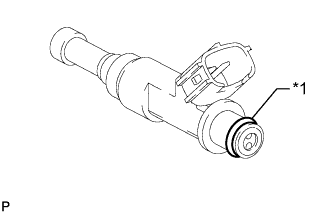
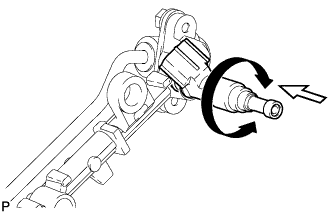
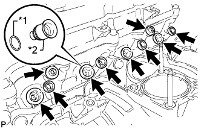
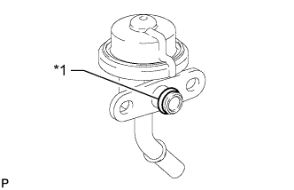

ТОПЛИВНАЯ ФОРСУНКА > УСТАНОВКА |
| 1. УСТАНОВИТЕ ТОПЛИВНУЮ ФОРСУНКУ В СБОРЕ |
|  |
Нанесите небольшой слой шпиндельного масла или бензина на новые кольцевые уплотнения и установите их на каждую топливную форсунку.
| *1 | Кольцевое уплотнение |
Нанесите тонкий слой шпиндельного масла или бензина на контактные поверхности топливной рампы и кольцевого уплотнения топливной форсунки.
|  |
Вновь нанесите тонкий слой бензина или шпиндельного масла на кольцевое уплотнение, а затем установите топливную форсунку в топливную рампу, повернув ее вправо и влево.
 | Поверните |
 | Нажмите |
Убедитесь, что форсунка вращается плавно.
Если форсунка не вращается, замените кольцевое уплотнение.
| 2. УСТАНОВИТЕ ТОПЛИВНУЮ РАМПУ С ТОПЛИВНОЙ ФОРСУНКОЙ |
|  |
Нанесите тонкий слой бензина или шпиндельного масла на новые кольцевые уплотнения и установите их на каждую распорную втулку.
| *1 | Новое кольцевое уплотнение |
| *2 | Дистанционная шайба |
Установите 4 распорные втулки в головку блока цилиндров.
Установите 4 новых виброизолятора форсунок на головку блока цилиндров.
Установите 2 распорные втулки топливной рампы № 1 на головку блока цилиндров.
Установите топливную рампу вместе с 4 топливными форсунками, а затем временно закрепите ее 2 болтами.
Убедитесь, что форсунки вращаются плавно.
Если какая-либо форсунка не вращается, замените ее кольцевое уплотнение.
Затяните 2 болта.
Закрепите электровакуумный клапан продувки с помощью болта.
Установите кронштейн зажима жгута проводов и закрепите его болтом.
Закрепите зажим жгута проводов.
Подсоедините разъем электровакуумного клапана продувки.
Подсоедините 4 разъема форсунок.
| 3. УСТАНОВИТЕ ДЕМПФЕР ПУЛЬСАЦИЙ ДАВЛЕНИЯ В ТОПЛИВНОЙ СИСТЕМЕ В СБОРЕ |
|  |
Нанесите тонкий слой бензина или шпиндельного масла на кольцевое уплотнение.
| *1 | Кольцевое уплотнение |
Закрепите демпфер пульсаций давления в топливной системе 2 болтами.
| 4. ПОДСОЕДИНИТЕ ТОПЛИВНЫЙ ШЛАНГ |
Подсоедините топливный шланг (Нажмите здесь).
| 5. ПОДСОЕДИНИТЕ ТОПЛИВНЫЙ ШЛАНГ № 2 |
Подсоедините топливный шланг № 2.
| 6. УСТАНОВИТЕ КОРПУС ДРОССЕЛЬНОЙ ЗАСЛОНКИ С ЭЛЕКТРОДВИГАТЕЛЕМ В СБОРЕ |
Установите корпус дроссельной заслонки с электродвигателем в сборе (Нажмите здесь).
| 7. ПОДСОЕДИНИТЕ ПРОВОД К ОТРИЦАТЕЛЬНОМУ ВЫВОДУ АККУМУЛЯТОРНОЙ БАТАРЕИ |
| 8. ПРОВЕРЬТЕ, НЕТ ЛИ УТЕЧЕК ТОПЛИВА |
После технического обслуживания топливной системы проверьте ее на отсутствие утечек топлива.
Подсоедините портативный диагностический прибор к DLC3.
Включите зажигание и портативный диагностический прибор.
Войдите в следующие меню: Powertrain / Engine and ECT / Active Test / Control the Fuel Pump/Speed.
Убедитесь в отсутствии утечек топлива из топливной системы.
При обнаружении утечки топлива отремонтируйте или замените детали, если необходимо.
Выключите зажигание.
Отсоедините портативный диагностический прибор от DLC3.